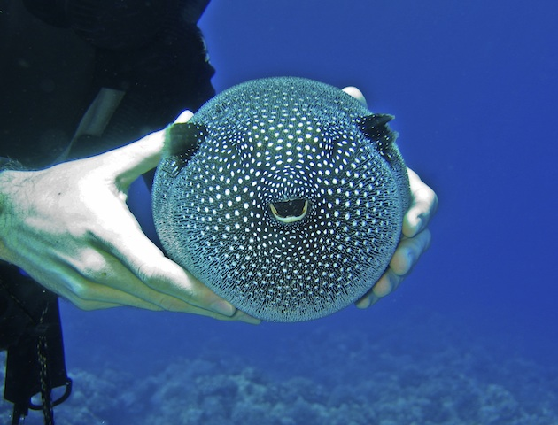

About pufferfish
Pufferfish can inflate into a ball shape to evade predators. Also known as blowfish, these clumsy swimmers fill their elastic stomachs with huge amounts of water (and sometimes air) and blow themselves up to several times their normal size.
Some pufferfish species also have spines on their skin to ward off predators. Even if a predator gobbles up a puffer before it inflates, it won't enjoy the snack. Most pufferfish contain a toxic substance that makes them foul tasting and potentially deadly to other fish. The toxin is deadly to humans. There is enough poison in one pufferfish to kill 30 adult humans, and there is no known antidote.
As Food
Amazingly, the meat of some pufferfish is considered a delicacy. Called fugu in Japan, it is extremely expensive and only prepared by trained, licensed chefs who know that one bad cut means almost certain death for a customer. In fact, many such deaths occur annually.
Diet
The diet of the pufferfish includes mostly invertebrates and algae. Large specimens will even crack open and eat clams, mussels, and shellfish with their hard beaks. Poisonous puffers are believed to synthesize their deadly toxin from the bacteria in the animals they eat.
Theats to Survival
Some species of pufferfish are considered vulnerable due to pollution, habitat loss, and overfishing, but most populations are considered stable.